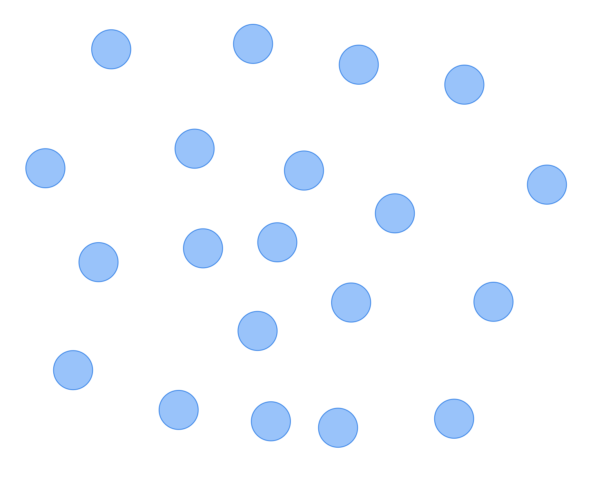
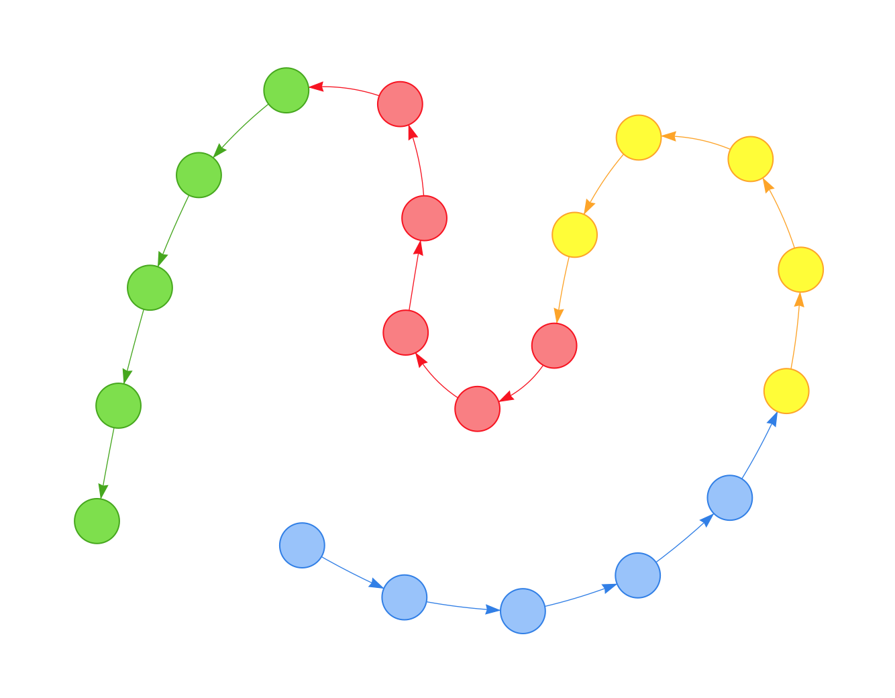
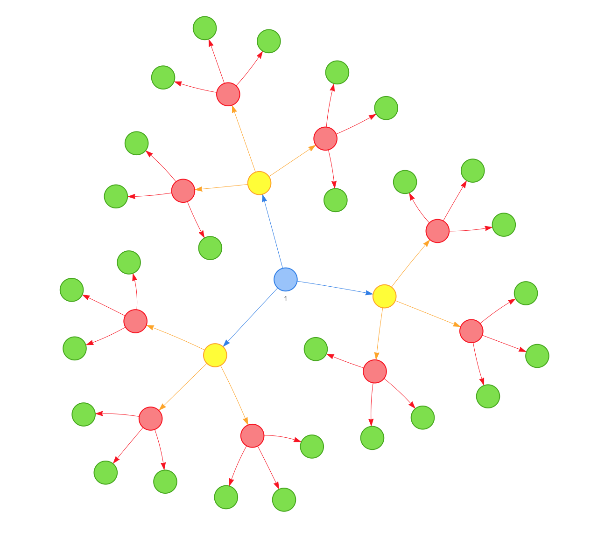
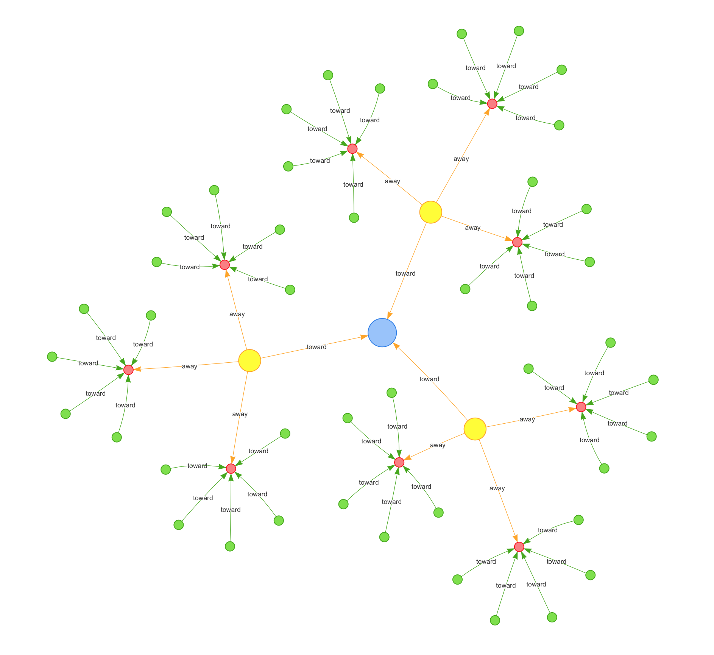
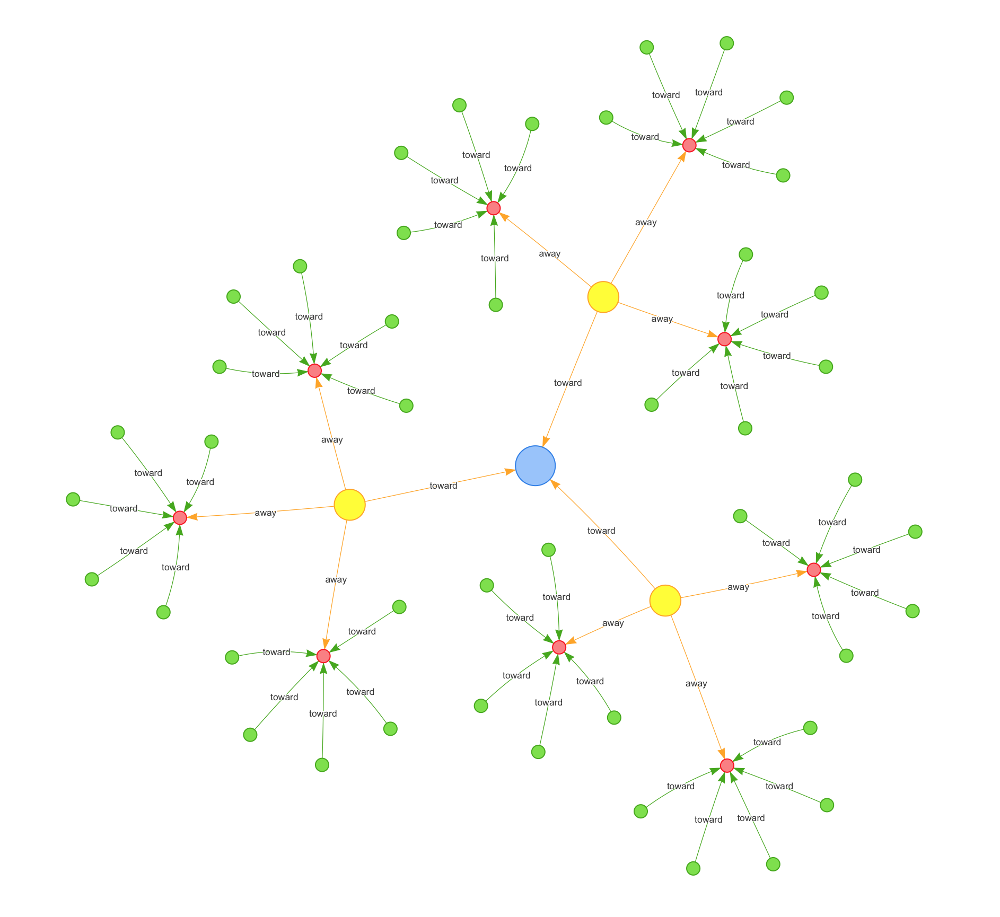
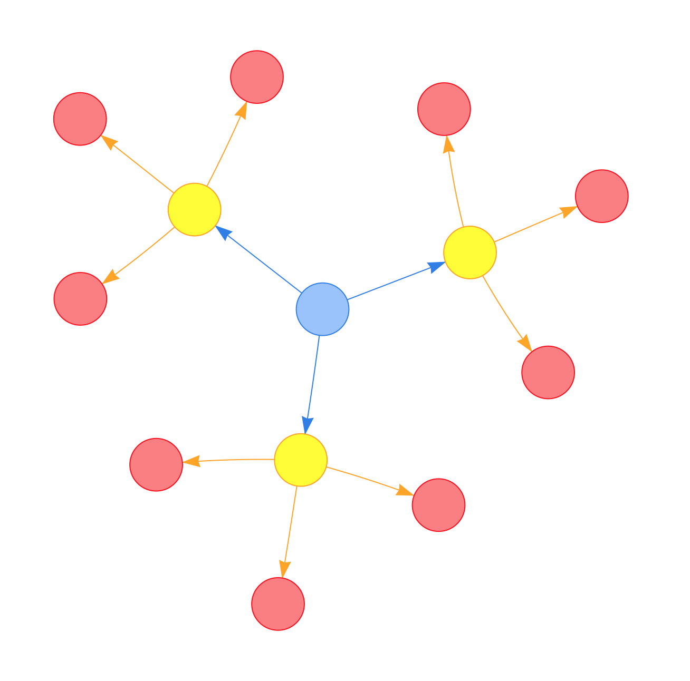
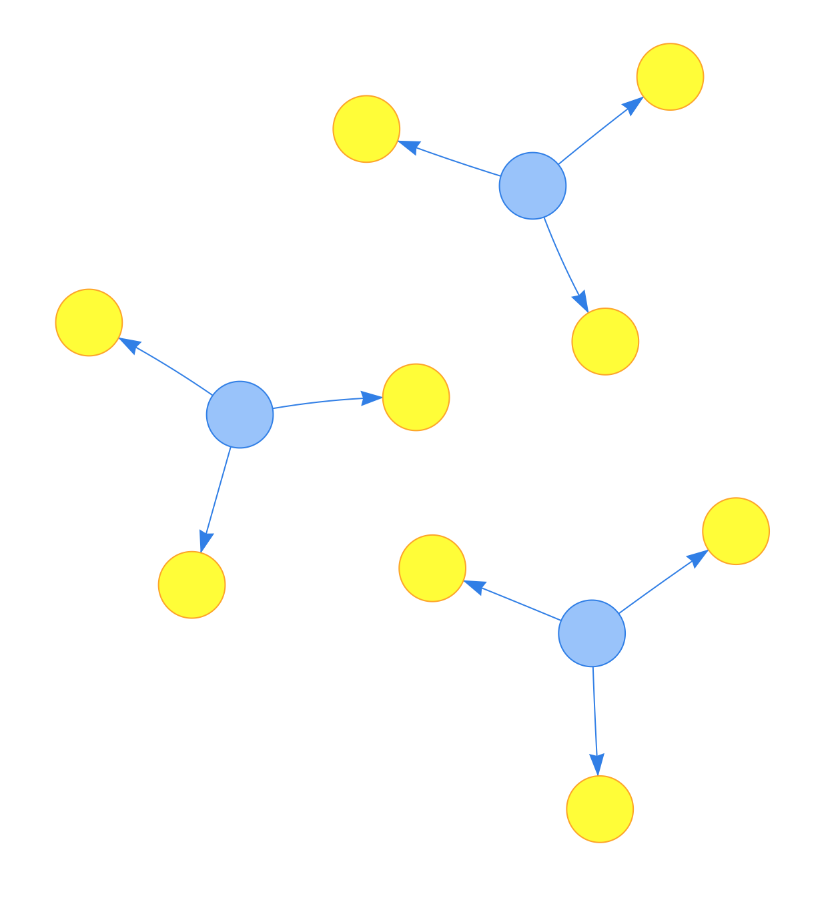
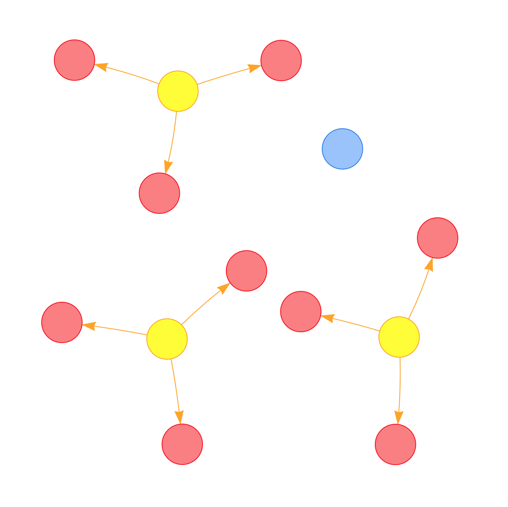

DiagrammeR Docs
Get an overview of DiagrammeR, learn the syntax, check out some examples.
Get an overview of DiagrammeR, learn the syntax, check out some examples.
What's a graph library without the ability to modify the graph? The functions presented herein are all about changing the graph in specific ways. Whether it's adding a node here, an edge there, or deleting a whole swath of nodes, this sort of functionality is important.
The add_node() and add_edge() functions provide a facility for adding a single node or edge to an existing graph. Although you may prepare node data frames (NDFs) or edge data frames (EDFs) and incorporate those into a new graph object with the create_graph() function, there may be new nodes or edges to add after creation of the graph object (say, as new data becomes available). After calling either of these functions, the new node or edge becomes part of the graph's internal NDF or EDF, respectively.


The add_node() function allows one to add a single node to a graph. Specify the graph to which the node should be added and the node ID for the node argument, and a node will be added. While the other arguments are optional, using just graph and node will result in the addition of an unconnected node. This might be desirable (say, if the graph is empty), but the more likely case is that edges to other nodes will be required upon addition of a new node. The from and to arguments (both optional) are where you would specify connections from existing nodes to the new node (with to), and connections to existing nodes from the new node (with from). A vector of node IDs can be supplied to either argument. The label and type arguments allow for direct setting of these node attributes during the addition of a node. Finally, a named vector of node attributes and their values can be included in the add_node() call.
The add_edge() function is meant for adding an edge between two extant graph nodes. Because the nodes must exist in the graph, this function cannot be invoked for an empty graph. (It can, however, be used for a graph with a single node since an edge can be created as a loop from and to the same node.) The basic means to add an edge to a graph with this function is to specify from and to nodes for the edge to be added. One can optionally add an edge rel string as a value for the rel argument.
###
# Add single nodes and edges
# with the `add_node()` and
# `add_edge()` functions
###
library(DiagrammeR)
library(magrittr)
# Create an empty graph
graph <- create_graph()
# Add two nodes, they will be
# given ID values that are
# monotonically increasing from `1`
graph <- add_node(graph)
graph <- add_node(graph)
# Get the node ID values
get_nodes(graph)
#> [1] "1" "2"
# Show the graph's internal NDF
get_node_df(graph)
#> nodes type label
#> 1 1 1
#> 2 2 2
# Create the same graph with
# magrittr `%>%` pipes
graph <-
create_graph() %>%
add_node %>% add_node
# Show the graph's internal NDF
get_node_df(graph)
#> nodes type label
#> 1 1 1
#> 2 2 2
# Add an edge between the two nodes
graph <-
graph %>% add_edge(1, 2)
# Show the graph's internal EDF
get_edge_df(graph)
#> from to rel
#> 1 1 2 So long as you are careful not to introduce nodes with duplicate ID values, you can add a node data frame (NDF) to existing graph. You can also add an edge data frame (EDF) to an existing graph. This can be done upon creation of the graph using the create_graph() function, however, these it can be useful to add collections of nodes or edges as NDFs or EDFs, perhaps whenever new data is available for the graph.
###
# Add several nodes and
# edges to the graph in the
# form of NDFs and EDFs
###
library(DiagrammeR)
# Create an empty graph
graph <- create_graph()
# Create a node data frame
nodes <-
create_nodes(
nodes = 1:4,
type = "a",
color = c("red", "green",
"grey", "blue"),
value = c(3.5, 2.6,
9.4, 2.7))
# Add the node data frame to the
# graph object to create a graph
# with nodes
graph <-
add_node_df(graph = graph,
node_df = nodes)
get_node_df(graph)
#> nodes type label color value
#> 1 1 a 1 red 3.5
#> 2 2 a 2 green 2.6
#> 3 3 a 3 grey 9.4
#> 4 4 a 4 blue 2.7
# Create another node data frame
nodes_2 <-
create_nodes(
nodes = 5:8,
type = "b",
color = c("orange", "brown",
"aqua", "pink"),
value = c(1.6, 6.4,
0.8, 4.2))
# Add the second node data frame
# to the graph object to add more
# nodes with attributes to the
# graph
graph <-
add_node_df(graph = graph,
node_df = nodes_2)
# Check the graph's internal
# NDF to see that the two NDFs
# were added
get_node_df(graph)
#> nodes type label color value
#> 1 1 a 1 red 3.5
#> 2 2 a 2 green 2.6
#> 3 3 a 3 grey 9.4
#> 4 4 a 4 blue 2.7
#> 5 5 b 5 orange 1.6
#> 6 6 b 6 brown 6.4
#> 7 7 b 7 aqua 0.8
#> 8 8 b 8 pink 4.2
# Create edges by first specifying
# `from` to `to` vectors of node
# ID values
from <-
c(1, 3, 5, 2, 3, 5, 2, 5, 3)
to <-
c(3, 6, 2, 7, 8, 7, 4, 4, 5)
# Create the EDF
edges <-
create_edges(from = from,
to = to,
rel = "toward")
# Add the EDF to the graph
graph <-
add_edge_df(graph,
edge_df = edges)
# Check the graph's internal
# EDF to see that the EDF
# was indeed added
get_edge_df(graph)
#> from to rel
#> 1 1 3 toward
#> 2 3 6 toward
#> 3 5 2 toward
#> 4 2 7 toward
#> 5 3 8 toward
#> 6 5 7 toward
#> 7 2 4 toward
#> 8 5 4 toward
#> 9 3 5 toward
# View the graph
render_graph(graph)

Add a multiple of new nodes to the graph in a single function call with the add_n_nodes() function.
The argument n is for the number of new nodes to add to the graph, so, supply an integer that is greater than or equal to 1. Optionally, set node type values for the new nodes (this is important for creating property graphs). The set_node_type argument takes an optional string for applying a single type attribute to all the newly created nodes.
###
# Add several nodes with different
# `type` attributes to the graph
# with the `add_n_nodes()`
# functions
###
library(DiagrammeR)
library(magrittr)
# Add 20 nodes to an empty graph
create_graph(graph_attrs =
"output = visNetwork") %>%
add_n_nodes(20) %>%
render_graph

# Add 20 nodes of 4 different types to
# an empty graph and then create edges
# between them
create_graph(graph_attrs =
"output = visNetwork") %>%
add_n_nodes(5, "A") %>%
add_n_nodes(5, "B") %>%
add_n_nodes(5, "C") %>%
add_n_nodes(5, "D") %>%
add_edge_df(create_edges(1:19, 2:20)) %>%
render_graph
Add a number of nodes to the graph by attaching them to (add_n_nodes_to_selection()) or from (add_n_nodes_from_selection()) a selection of nodes. The nodes created can be assigned a common value for their type attribute.

It's occasionally convenient to select one or more nodes and then add several nodes to or from them. Any use of add_n_nodes_from_selection() or add_n_nodes_to_selection() requires a selection of one or more nodes in the graph and this can be done with either of the node selection functions (e.g., select_nodes(), select_nodes_by_degree(), etc.). Both functions have set_node_type and set_edge_rel arguments, which allow you to optionally provide a common value for either the node type or for the edge rel type for all new nodes and edges created through this function call.
###
# Add several nodes with different
# `type` attributes to the graph
# with `add_n_nodes_from_selection()`
# and `add_n_nodes_to_selection()`
###
library(DiagrammeR)
library(magrittr)
# Create a graph with a central
# node and multiples of children nodes
create_graph(graph_attrs =
"output = visNetwork") %>%
add_node("A") %>% select_nodes %>%
add_n_nodes_from_selection(3, "B") %>%
clear_selection %>%
select_nodes("type", "B") %>%
add_n_nodes_from_selection(3, "C") %>%
clear_selection %>%
select_nodes("type", "C") %>%
add_n_nodes_from_selection(3, "D") %>%
render_graph

# Create a graph with two central
# nodes with a high indegree and
# outdegree
create_graph(graph_attrs =
"output = visNetwork") %>%
add_n_nodes(2, "A") %>% add_edge(1, 2) %>%
select_nodes_by_id(1) %>%
add_n_nodes_to_selection(10, "B") %>%
clear_selection %>%
select_nodes_by_id(2) %>%
add_n_nodes_from_selection(10, "C") %>%
render_graph
 # Create a graph in the same
# manner but add relationships
# and other attributes
create_graph(graph_attrs =
"output = visNetwork") %>%
add_n_nodes(1, "A") %>% select_last_node %>%
set_node_attr_with_selection("value", 5) %>%
add_n_nodes_to_selection(3, "B", "toward") %>%
clear_selection %>%
select_nodes("type", "B") %>%
set_node_attr_with_selection("value", 4) %>%
add_n_nodes_from_selection(3, "C", "away") %>%
clear_selection %>%
select_nodes("type", "C") %>%
set_node_attr_with_selection("value", 3) %>%
add_n_nodes_to_selection(5, "D", "toward") %>%
select_nodes("type", "D") %>%
set_node_attr_with_selection("value", 2) %>%
render_graph

# Create a graph in the same
# manner but add relationships
# and other attributes
create_graph(graph_attrs =
"output = visNetwork") %>%
add_n_nodes(1, "A") %>% select_last_node %>%
set_node_attr_with_selection("value", 5) %>%
add_n_nodes_to_selection(3, "B", "toward") %>%
clear_selection %>%
select_nodes("type", "B") %>%
set_node_attr_with_selection("value", 4) %>%
add_n_nodes_from_selection(3, "C", "away") %>%
clear_selection %>%
select_nodes("type", "C") %>%
set_node_attr_with_selection("value", 3) %>%
add_n_nodes_to_selection(5, "D", "toward") %>%
select_nodes("type", "D") %>%
set_node_attr_with_selection("value", 2) %>%
render_graph

Graphs can undergo all sorts of modifications, and this includes the removal of nodes or edges. The delete_node() and delete_edge() functions allow for the removal of single nodes or edges. Also, when deleting a node that has edges, those edge definitions will also be removed.


The function delete_node() removes a single node from the graph. The functions expects a node ID value to uniquely identify the node to be deleted. As the function can only delete a single node per call, supply only a single node ID to the node argument. All of the removed node's edges with other nodes in the graph will also be removed in this operation.
###
# Delete specific nodes
# from the graph using
# `delete_node()`
###
library(DiagrammeR)
library(magrittr)
# Create a graph with a central
# node and multiples of children nodes
graph <-
create_graph(graph_attrs =
"output = visNetwork") %>%
add_n_nodes(1, "A") %>%
select_nodes %>%
add_n_nodes_from_selection(3, "B") %>%
clear_selection %>%
select_nodes("type", "B") %>%
add_n_nodes_from_selection(3, "C")
# View the graph
graph %>% render_graph

# Remove the central node (`1`) by
# specifying the node ID directly
graph_delete_node_1 <-
graph %>% delete_node(1)
# View the modified graph
graph_delete_node_1 %>% render_graph

# Remove the first (and only) node
# with `type = A` from the graph
# (this is node `1`, as before)
graph_delete_node_2 <-
graph %>%
delete_node(
get_nodes(., "type", "A")[1]
)
# Inspect a list of nodes to
# ensure that node `1` has been
# removed
get_nodes(graph_delete_node_2)
#> [1] "2" "3" "4" "5" "6"
#> [6] "7" "8" "9" "10"
#> [10] "11" "12" "13"
# Also, edges were removed from
# this node removal; check that
# there are no edges from or to
# node `1`
graph_delete_node_2 %>%
get_edges %>%
{
from <- .[[1]]
to <- .[[2]]
nodes_in_edges <- c(from, to)
} %>% is_in(1, .)
#> [1] FALSEThe function delete_edge() removes a single edge from the graph. Specify the graph object in graph, the nodes in from and to, and the edge will removed if it exists.
###
# Delete specific edges
# from the graph using
# `delete_edge()`
###
library(DiagrammeR)
library(magrittr)
# Create a graph with a central
# node and multiples of children nodes;
# this is the same graph as in the
# previous example
graph <-
create_graph(graph_attrs =
"output = visNetwork") %>%
add_n_nodes(1, "A") %>%
select_nodes %>%
add_n_nodes_from_selection(3, "B") %>%
clear_selection %>%
select_nodes("type", "B") %>%
add_n_nodes_from_selection(3, "C")
# Remove the several edges by
# specifying the node ID values
# that make up those edges
graph_delete_edges <-
graph %>%
delete_edge(1, 2) %>%
delete_edge(1, 3) %>%
delete_edge(1, 4)
graph_delete_edges %>% render_graph

type Attribute
The node_type() function provides various means to check the type attribute for a node and perform different operations on that attribute. The different functionalities of node_type can be changed through the use of these different keywords for the action argument: read, check, add, update, and delete. With read set as the action, a node ID supplied with the graph object yields that node's type attribute. Using action = check with a node ID, you can check whether a type attribute exists (it will return TRUE or FALSE. If the type attribute hasn't been set for a node, you can add that using action = add along with a string supplied for the value argument. If a type attribute has alredy been set for a node and you'd like to change it, use action = update and include the updated string with the value argument. Deleting a type attribute for a node is easily accomplished by using action = delete.
rel Attribute
The edge_rel() function is similar in principle and use to the node_type() function. In this function, the edges' rel attribute can be checked for existence, added, removed, or updated. As with the node_type() function, this function uses the action argument and performs various actions with these keywords: read, check, add, update, and delete (same keywords as those for node_type()). Using read, supply node IDs for the from and to arguments. With that, you will receive the edge's currently set rel attribute. The rel attribute may or may not be set, so, using action = check with a specified edge, the existence of the rel attribute can be verified through a TRUE or FALSE return value. An unset rel attribute for an edge can be set by using action = add and a character string for the value argument. To update an already set rel attribute for an edge, use action = update and provide the updated relationship string with the value argument. Deleting a rel attribute for an edge is done by using action = delete with an edge.
Setting the graph's name and time attributes can be useful when there is a collection of graphs and such properties can help when distinguishing the graph objects. The functions that deal with graph series objects can take advantage of any graph names and graph date-time values that are available. The create_graph() function affords the option to set these parameters upon graph creation, however, the set_graph_name() and set_graph_time provide additional opportunities to add, modify, or remove such attributes.

The set_graph_name() function takes a graph object and a value for the graph_name (this can be provided as numeric value but will be coerced to a character value. The same function can set a graph's name (changing from the default NULL) and also modify a graph's name (replacing the value).
###
# Set the graph's name, then
# modify the name
###
library(DiagrammeR)
library(magrittr)
# Create an empty graph
graph <- create_graph()
# Set the graph's name
graph %<>% set_graph_name("nice_graph")
# Check the name of the graph
graph$graph_name
#> [1] "nice_graph"
# Change the graph's name
graph %<>% set_graph_name(1)
# Verify that the name has changed
graph$graph_name
#> [1] "1"The set_graph_time() function can be provided with a date or date-time string (for the graph_time argument). This will be useful if the graph is to be inserted into a graph series of the temporal type. An optional value for the time zone (tz) corresponding to the date or date-time string supplied as a value to graph_time. If no time zone is provided then it will be implicitly set to GMT.
###
# Set the graph's date/time value,
# then modify the these properties
###
library(DiagrammeR)
library(magrittr)
# Create an empty graph
graph <- create_graph()
# Set the graph's time attribute with
# a well-formed date ("YYYY-MM-DD")
graph %<>% set_graph_time("2015-01-30")
# Check the `graph_time` attribute
graph$graph_time
#> [1] "2015-01-30"
# Note that since the time zone was
# not provided, the default is `GMT`
graph$graph_tz
#> [1] "GMT"
# I'll update the `graph_time`
# attribute with an actual
# timestamp (i.e., date + time) and
# a time zone
graph %<>%
set_graph_time("2015-01-30 15:26:54",
"Pacific/Pago_Pago")
# Let's check both the time and
# the time zone set for the graph
c(graph$graph_time,
graph$graph_tz)
#> [1] "2015-01-30 15:26:54"
#> [2] "Pacific/Pago_Pago"
Once a node or edge is in the graph, there are still opportunities to add or modify node or edge attribute values. There are four functions that help with this sort of task: set_node_attr(), set_edge_attr(), set_node_attr_with_selection(), and set_edge_attr_with_selection().
When adding or modifying node attributes, you can target all the nodes at once (using set_node_attr() with no values provided to the nodes argument). Specific nodes can be targeted by providing a vector of node ID values to the nodes argument of the set_node_attr() function or by creating a selection of nodes (using select_nodes(), select_nodes_by_id(), select_nodes_by_degree(), etc.) and using the set_node_attr_with_selection() function. Similarly, for additions or modifications of edge attributes, the set_edge_attr() and set_edge_attr_with_selection() are used in the same manner.
Mainly for purposes of scaling data values to values supplied to aesthetics, the rescale_node_attr_in_selection() and rescale_edge_attr_in_selection() functions are available.